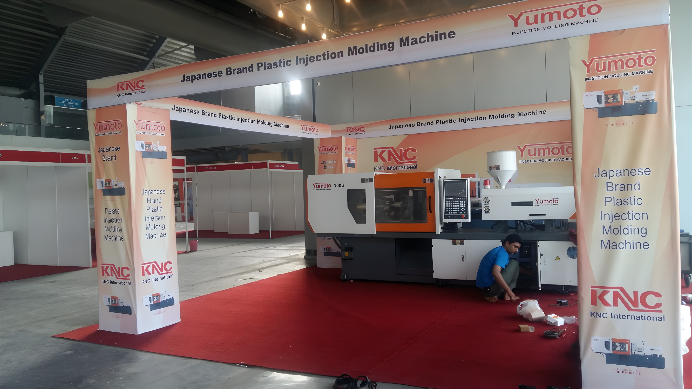
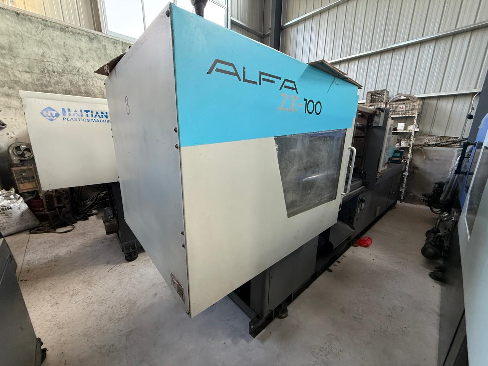

Our Story
KNC International is a premier name in Pakistan's industrial machinery sector, specializing in high-performance plastic injection moulding solutions. Led by Nadeem Mustafa, we have built a reputation for bridging the gap between world-class manufacturing technology and local industrial needs.
Our core strength lies in our strong international partnerships. We have established robust trade connections with leading Chinese manufacturers. By sourcing directly from top Chinese factories, we ensure our clients receive cutting-edge technology at competitive prices.
We are also proud to be an active participant in Pakistan's industrial community, having showcased our machinery and solutions at major exhibitions held at the Lahore Expo Center. These platforms allow us to demonstrate our commitment to advancing the local manufacturing sector.
Leadership
Nadeem Mustafa
Owner & Managing Director
Driving KNC International's vision of equipping Pakistani manufacturers with world-class, reliable machinery through strong global partnerships.
Exhibitions & Project Gallery
A look at our machinery, installations, and industry presence across Pakistan.

Direct Trade with China We bypass middlemen by establishing direct trade routes with top-tier manufacturing hubs in China. This ensures our clients receive authentic, high-quality machinery at the most competitive market rates.

Customized for Your Production No two factories are exactly alike. We work closely with our clients to understand their specific production volumes, material requirements, and budget constraints, ensuring we supply the exact machine specifications needed to maximize their ROI.

Led by Nadeem Mustafa Under the leadership of Nadeem Mustafa, KNC International is driven by a commitment to after-sales excellence. We don't just sell machines; we provide ongoing maintenance, genuine spare parts, and expert technical guidance to keep your production line running without interruption.